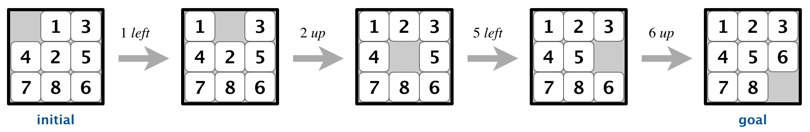

Homework 4: breadth-first search
You have been given the following code:HW4.java
In HW4, you will use breadth-first search to test if a given "8-puzzle" configuration is solvable. You should submit one file, HW4.java.
8-puzzle rules
The puzzle consists of a 3x3 grid, with 8 tiles, labeled 1 to 8, and one empty slot. You can move a tile horizontally or vertically into the empty slot, to move from one configuration to another. The initial configuration is "solvable" if it is possible to reach the goal configuration.
This initial configuration is solvable because it is possible to reach the goal configuration. Source: cs.princeton.edu
Graph representation
Each configuration will be represented by a Configuration object (the Configuration class has been given to you).The Configuration class has the following instance methods:
List<Configuration> getAdjacentConfigurations()
returns a List of all adjacent configurations adjacent to this configuration (the List will always have 2, 3, or 4 elements).
For example, if c is a Configuration object, c.getAdjacentConfigurations() returns a List of Configurations adjacent to c.
boolean isGoalConfiguration()
returns true if if this configuration is the goal configuration.
For example, if c is a Configuration object, c.isGoalConfiguration() returns true if c is the goal configuration.
Solving the puzzle
Write a methodboolean isSolvable(Configuration initialConfiguration)
which takes an initial configuration as a parameter and returns true if it is possible to reach the goal configuration. Otherwise return false.
You must use breadth-first search. If the search takes more than 1 second, there's probably a bug in your code.
Below is pseudocode for breadth-first search.
boolean isSolvable(Configuration initialConfiguration) {
initialize empty queue
mark initialConfiguration as visited
add initialConfiguration to queue
while queue is not empty {
v = queue.dequeue()
get the list of configurations that are adjacent to v
for each adjacent configuration w {
if w has not been visited yet {
mark w as visited
add w to queue
}
}
}
// Additionally, put return statements in the appropriate places
// (return true if you visited the goal configuration, otherwise return false).
}
- I suggest using a HashSet to keep track of which configurations have been visited (Configuration objects may be used as hash table keys because the class has both an equals method and a hashCode method).
- You can find a list of Queue methods in the Queue interface.
- The Configuration class has a ToString method, in case you want to print the 3x3 grids, which might be useful for debugging purposes.